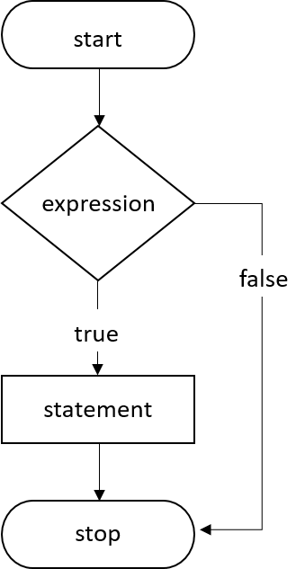

<!-- Page content-->
<div class="container mt-5">
    <div class="row">
        <div class="col">
            <!-- Post content-->
            <article>
                <!-- Post header-->

                <!-- Post content-->

                <section class="mb-5">

                    <p class="fs-5 mb-4">C conditional statements allow you to make a decision, based upon the result of a condition. These statements are called <b>Decision Making Statements</b> or <b>Conditional Statements</b>.</p>
                    <p class="fs-5 mb-4">So far, we have seen that all set of statements in a C program gets executed sequentially in the order in which they are written and appear. This occurs when there is no jump based statements or repetitions of certain calculations. But some situations may arise where we may have to change the order of execution of statements depending on some specific conditions. This involves a kind of decision making from a set of calculations. It is to be noted that C language assumes any non-zero or non-null value as true and if zero or null, treated as false.</p>
                    <p class="fs-5 mb-4">This type of structure requires that the programmers indicate several conditions for evaluation within a program. The statement(s) will get executed only if the condition becomes true and optionally, alternative statement or set of statements will get executed if the condition becomes false.</p>
                    <p class="fs-5 mb-4"><u>The flowchart of the Decision-making technique in C can be expressed as:</u> </p>
                    
                    <p class="fs-5 mb-4">C languages have such decision-making capabilities within its program by the use of following the decision making statements:</p>
                    <div class="card">
                        <div class="card-header">Conditional Statements in C</div>
                        <div class="card-body">
                            <ul>
                                <li>If statement
                                    <ul>
                                        <li><a href="c_lectures-if.html">if statement</a></li>
                                        <li><a href="c_lectures-if-else.html">if-else statement</a></li>
                                        <li><a href="c_lectures-nested_if-else.html">Nested if-else statement</a></li>
                                        <li><a href="c_lectures-else-if.html">else if-statement</a></li>
                                    </ul>
                                </li>
                                <li><a href="c_lectures-goto.html">goto statement</a></li>
                                <li><a href="c_lectures-switch.html">switch statement</a></li>
                                <li>Conditional Operator</li>
                            </ul>
                        </div>
                    </div>

                    
                </section>
            </article>
        </div>
    </div>
</div>